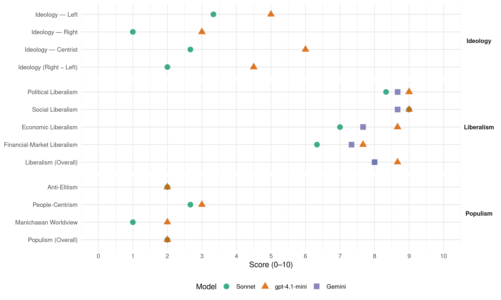

LibDems (United Kingdom, 2015)
manifesto_id 51421_201505
Get full text: This site shows derived annotations and short verbatim quotes only. The full manifesto text is © Manifesto Project / WZB — obtain it via manifesto-project.wzb.eu using the manifesto_id above.
Headline scores
| Dimension | Sonnet | gpt-4.1-mini | Gemini |
|---|---|---|---|
| Populism (Overall) | 2.0 | 2.0 | – |
| Anti-Elitism | 2.0 | 2.0 | – |
| People-Centrism | 2.7 | 3.0 | – |
| Manichaean Worldview | 1.0 | 2.0 | – |
| Ideology (Right − Left) | 2.0 | 4.5 | – |
| Liberalism (Overall) | 8.0 | 8.7 | 8.0 |
| Political Liberalism | 8.3 | 9.0 | 8.7 |
| Social Liberalism | 9.0 | 9.0 | 8.7 |
| Economic Liberalism | 7.0 | 8.7 | 7.7 |
| Financial-Market Liberalism | 6.3 | 7.7 | 7.3 |
Evidence per dimension
Economic Liberalism
Gemini · score 7.0 · verified · chunk 1
“promote open markets and free trade”
As a major global economy, we must promote open markets and free trade, both within the European Union and beyond.
Gemini · score 8.0 · verified · chunk 2
“deepen the EU single market in the energy”
We will: Work to deepen the EU single market in the energy sector, in the digital economy and for services.
Gemini · score 8.0 · verified · chunk 3
“deepen the EU single market”
We will: Work to deepen the EU single market in the energy sector, in the digital economy
gpt-4.1-mini · score 9.0 · verified · chunk 1
“free markets, competition, free enterprise, deregulation/privatization”
We will continue to reform business tax to ensure it stays competitive, making small and medium-sized enterprises the priority for any business tax cuts. We will work to adjust the tax system away from subsidy of high leverage debt and tackle the bias against equity investment Reform and improve the Regulatory Policy Committee to reduce regulatory uncertainty and remove unnecessary business regulation.
gpt-4.1-mini · score 8.0 · verified · chunk 2
“Support ambitious EU vehicle emission standards”
Support ambitious EU vehicle emission standards, and reform Vehicle Excise Duty to drive continuous reductions in greenhouse gas and other pollutants from the UK car fleet and return revenues to levels projected in 2010.
gpt-4.1-mini · score 9.0 · verified · chunk 3
“reduce the burden of EU legislation on business by curbing unnecessary red tape”
Continue to reduce the burden of EU legislation on business by curbing unnecessary red tape, exempting small businesses from EU rules where possible and defending the UK opt-out to the Working Time Directive. Increase the accountability of the EU by enhancing the role of national Parliaments in scrutinising EU decision-making and by giving a combined majority of national Parliaments the automatic ability to block unwanted legislation.
Sonnet · score 7.0 · verified · chunk 1
“promote open markets and free trade”
we must promote open markets and free trade, both within the European Union and beyond
Sonnet · score 7.0 · verified · chunk 2
“deepen the EU single market”
Work to deepen the EU single market in the energy sector, in the digital economy and for services. We will boost British exports by scrapping national barriers
Sonnet · score 7.0 · verified · chunk 3
“deepen the EU single market”
Work to deepen the EU single market in the energy sector, in the digital economy and for services. We will boost British exports by scrapping national barriers
Financial-Market Liberalism
Gemini · score 7.0 · verified · chunk 1
“separate retail banking from investment banking”
Complete implementation of the new rules to separate retail banking from investment banking, working with the financial
Gemini · score 8.0 · verified · chunk 2
“extending country-by-country reporting from banks”
Improve tax transparency including in low-income countries by extending country-by-country reporting from banks and extractive industries to all UK listed companies
Gemini · score 7.0 · verified · chunk 3
“Work with regulatory bodies and financial investors”
to tackle and adapt to climate change. Work with regulatory bodies and financial investors to establish a global reporting standard
gpt-4.1-mini · score 8.0 · verified · chunk 1
“reformed the banking system; creating the world’s first Green Investment Bank”
We have made a big start in government: reforming the banking system; creating the world’s first Green Investment Bank; enabling unprecedented investment in low-carbon energy; introducing a Regional Growth Fund and a bold new Industrial Strategy to support growth and high-skilled jobs; delivering more than two million new apprenticeships; ensuring transparency of company ownership and promoting more diversity in business leadership.
gpt-4.1-mini · score 7.0 · verified · chunk 2
“Secured a record £23.9 billion last year from clamping down on tax evasion”
A Record of Delivery Increased aid spending to 0.7% of national income, and guaranteed this in law Secured a record £23.9 billion last year from clamping down on tax evasion, avoidance and fraud, and won G8 agreement on transparency on the real owners of businesses Passed a law to guarantee a referendum before Britain passes any more powers to the EU
gpt-4.1-mini · score 8.0 · verified · chunk 3
“Work with regulatory bodies and financial investors to establish a global reporting standard”
International action on the environment The open and internationalist approach Liberal Democrats have always adopted is particularly crucial when it comes to environmental policy. Pollution does not respect national borders, and wildlife and ecosystems are not constrained by political boundaries. Challenges like climate change and deforestation are too massive for individual countries to tackle alone. We will: Work with regulatory bodies and financial investors to establish a global reporting standard for fossil fuel companies on the potential impact of future restrictions on carbon emissions on their asset base.
Sonnet · score 7.0 · verified · chunk 1
“separate retail banking from investment banking”
Reformed the banking system to separate retail and investment banking and help rebuild our economy
Sonnet · score 6.0 · verified · chunk 2
“new government-backed Housing Investment Bank”
A new government-backed Housing Investment Bank to provide long-term capital for major new settlements and help attract finance for major house building projects
Sonnet · score 6.0 · verified · chunk 3
“financial investors to establish a global reporting standard”
Work with regulatory bodies and financial investors to establish a global reporting standard for fossil fuel companies on the potential impact of future restrictions on carbon emissions
Political Liberalism
Gemini · score 8.0 · verified · chunk 1
“embedded citizens’ rights to freedom of speech”
A second Freedoms Act will have embedded citizens’ rights to freedom of speech and protest.
Gemini · score 9.0 · verified · chunk 2
“protect your privacy by updating data laws”
A Promise of More Protect your privacy by updating data laws for the internet age with a Digital Bill of Rights
Gemini · score 9.0 · verified · chunk 3
“advance human rights and democracy throughout the world”
Liberal Democrats believe British foreign policy and international aid should seek to advance human rights and democracy throughout the world. We believe all people
gpt-4.1-mini · score 9.0 · verified · chunk 1
“Power to the people: Devolution democracy and citizenship”
Power to the people: Devolution democracy and citizenship Britain in the World: Global action for security and prosperity Introduction Dear friend, When Liberal Democrats launched our 2010 General Election manifesto, few people expected that many of the policies it contained would be implemented by the next Government.
gpt-4.1-mini · score 9.0 · verified · chunk 2
“Protect the Human Rights Act and enshrine the UN Convention”
We will: Protect the Human Rights Act and enshrine the UN Convention on the Rights of the Child in UK law. We will take appropriate action to comply with decisions of UK courts and the European Court of Human Rights.
gpt-4.1-mini · score 9.0 · verified · chunk 3
“Continue to support free media and a free and open Internet”
Standing up for Liberal values Liberal Democrats believe British foreign policy and international aid should seek to advance human rights and democracy throughout the world. We believe all people – regardless of ethnicity, disability, age, belief, gender or sexual orientation – deserve a freer, fairer and more prosperous world. We will: Continue to support free media and a free and open Internet around the world, championing the free flow of information. Maintain funding to BBC World Service, BBC Monitoring and the British Council. Develop a comprehensive strategy for promoting the decriminalisation of homosexuality around the world, and advancing the cause of LGBT+ rights.
Sonnet · score 8.0 · verified · chunk 1
“A second Freedoms Act will have embedded citizens’ rights”
People will be more free. A second Freedoms Act will have embedded citizens’ rights to freedom of speech and protest
Sonnet · score 9.0 · verified · chunk 2
“champions of liberty and human rights”
Liberal Democrats have always been champions of liberty and human rights. Freedom of expression has recently been under renewed attack, and siren voices call for us to sacrifice freedom
Sonnet · score 8.0 · verified · chunk 3
“enhancing the role of national Parliaments”
Increase the accountability of the EU by enhancing the role of national Parliaments in scrutinising EU decision-making and by giving a combined majority of national Parliaments
Liberalism (Overall)
Gemini · score 8.0 · verified · chunk 1
“build a fair, free and open society”
This manifesto is a five year plan to build a fair, free and open society in our United Kingdom.
Gemini · score 8.0 · verified · chunk 2
“champions of liberty and human rights”
Liberal Democrats have always been champions of liberty and human rights. Freedom of expression has recently been under renewed
Gemini · score 8.0 · verified · chunk 3
“advance human rights and democracy throughout the world”
Liberal Democrats believe British foreign policy and international aid should seek to advance human rights and democracy throughout the world. We believe all people
gpt-4.1-mini · score 9.0 · verified · chunk 1
“Power to the people: Devolution democracy and citizenship”
Power to the people: Devolution democracy and citizenship Britain in the World: Global action for security and prosperity Introduction Dear friend, When Liberal Democrats launched our 2010 General Election manifesto, few people expected that many of the policies it contained would be implemented by the next Government.
gpt-4.1-mini · score 8.0 · verified · chunk 2
“Protect the Human Rights Act and enshrine the UN Convention”
We will: Protect the Human Rights Act and enshrine the UN Convention on the Rights of the Child in UK law. We will take appropriate action to comply with decisions of UK courts and the European Court of Human Rights.
gpt-4.1-mini · score 9.0 · verified · chunk 3
“Continue to support free media and a free and open Internet”
Standing up for Liberal values Liberal Democrats believe British foreign policy and international aid should seek to advance human rights and democracy throughout the world. We believe all people – regardless of ethnicity, disability, age, belief, gender or sexual orientation – deserve a freer, fairer and more prosperous world. We will: Continue to support free media and a free and open Internet around the world, championing the free flow of information. Maintain funding to BBC World Service, BBC Monitoring and the British Council. Develop a comprehensive strategy for promoting the decriminalisation of homosexuality around the world, and advancing the cause of LGBT+ rights.
Sonnet · score 8.0 · verified · chunk 1
“a fair, free and open society”
This manifesto is a five year plan to build a fair, free and open society in our United Kingdom
Sonnet · score 8.0 · verified · chunk 2
“champions of liberty and human rights”
Liberal Democrats have always been champions of liberty and human rights. Freedom of expression has recently been under renewed attack
Sonnet · score 8.0 · verified · chunk 3
“support free media and a free”
Continue to support free media and a free and open Internet around the world, championing the free flow of information.
Anti-Elitism
gpt-4.1-mini · score 2.0 · verified · chunk 1
“taxes on the wealthiest, on banks and big business”
we will use taxes on the wealthiest, on banks and big business and on polluters, and we will bear down on tax avoidance, to limit the impact of deficit reduction on public services.
gpt-4.1-mini · score 2.0 · verified · chunk 2
“Take big money out of politics by capping donations”
We need to reform British politics to make it more representative and more empowering of our citizens so it commands greater public confidence. We will: Take big money out of politics by capping donations to political parties at £10,000 per person each year, and introducing wider reforms to party funding along the lines of the 2011 report of the Committee on Standards in Public Life, funded from savings from existing government spending on politics.
Sonnet · score 2.0 · verified · chunk 1
“corporations cannot dodge their tax responsibilities”
strict rules will be in place to make sure the richest pay their fair share and corporations cannot dodge their tax responsibilities
Sonnet · score 2.0 · verified · chunk 2
“power of patronage and the influence of powerful corporate lobbies”
Unfair votes, overcentralisation of decision-making, the power of patronage and the influence of powerful corporate lobbies mean ordinary citizens and local communities are too often excluded
Sonnet · score 2.0 · verified · chunk 3
“abolishing unnecessary EU institutions”
Work to reform the EU to make it more efficient, reducing the proportion of the EU budget spent on the Common Agricultural Policy, abolishing unnecessary EU institutions like the European Economic and Social Committee
Ideology — Centrist
gpt-4.1-mini · score 6.0 · verified · chunk 1
“opportunity for everyone to get on and live the life they want”
Follow this plan and there will be opportunity for everyone to get on and live the life they want –at work, at home, online and in our communities.
gpt-4.1-mini · score 6.0 · verified · chunk 2
“For freedom to be meaningful, people need the power”
For freedom to be meaningful, people need the power not just to make decisions about their own lives, but about the way their country, their community, their workplace and more are run. Liberal Democrats have made a good start on modernising and decentralising the state.
Sonnet · score 2.0 · verified · chunk 1
“a stronger economy and a fairer society”
Liberal Democrats will continue to build a stronger economy and a fairer society with opportunity for everyone
Sonnet · score 3.0 · verified · chunk 2
“ordinary citizens and local communities are too often excluded”
the power of patronage and the influence of powerful corporate lobbies mean ordinary citizens and local communities are too often excluded and sidelined in politics today
Sonnet · score 3.0 · verified · chunk 3
“party of reform whether that is”
Liberal Democrats are the party of reform whether that is in Westminster, Holyrood, the Senedd or in local Councils and the EU is no exception.
Ideology — Left
gpt-4.1-mini · score 3.0 · verified · chunk 1
“taxes on the wealthiest, on banks and big business”
we will use taxes on the wealthiest, on banks and big business and on polluters, and we will bear down on tax avoidance, to limit the impact of deficit reduction on public services.
gpt-4.1-mini · score 7.0 · verified · chunk 2
“Support ambitious EU vehicle emission standards”
Support ambitious EU vehicle emission standards, and reform Vehicle Excise Duty to drive continuous reductions in greenhouse gas and other pollutants from the UK car fleet and return revenues to levels projected in 2010.
Sonnet · score 3.0 · verified · chunk 1
“taxes on the wealthiest, on banks and big business”
we will use taxes on the wealthiest, on banks and big business and on polluters, and we will bear down on tax avoidance
Sonnet · score 4.0 · verified · chunk 2
“capping donations to political parties at £10,000”
Take big money out of politics by capping donations to political parties at £10,000 per person each year, and introducing wider reforms to party funding
Sonnet · score 3.0 · verified · chunk 3
“global companies pay fair taxes”
We will lead international action to ensure global companies pay fair taxes in the developing countries in which they operate, including tightening anti-tax haven rules
Ideology (Right − Left)
gpt-4.1-mini · score 4.0 · verified · chunk 1
“taxes on the wealthiest, on banks and big business”
we will use taxes on the wealthiest, on banks and big business and on polluters, and we will bear down on tax avoidance, to limit the impact of deficit reduction on public services.
gpt-4.1-mini · score 5.0 · verified · chunk 2
“Take big money out of politics by capping donations”
We need to reform British politics to make it more representative and more empowering of our citizens so it commands greater public confidence. We will: Take big money out of politics by capping donations to political parties at £10,000 per person each year, and introducing wider reforms to party funding along the lines of the 2011 report of the Committee on Standards in Public Life, funded from savings from existing government spending on politics.
Sonnet · score 2.0 · verified · chunk 1
“taxes on the wealthiest, on banks and big business”
we will use taxes on the wealthiest, on banks and big business and on polluters, and we will bear down on tax avoidance
Sonnet · score 2.0 · verified · chunk 2
“power of patronage and the influence of powerful corporate lobbies”
Unfair votes, overcentralisation of decision-making, the power of patronage and the influence of powerful corporate lobbies mean ordinary citizens and local communities are too often excluded
Sonnet · score 2.0 · verified · chunk 3
“party of reform whether that is”
Liberal Democrats are the party of reform whether that is in Westminster, Holyrood, the Senedd or in local Councils and the EU is no exception.
Ideology — Right
gpt-4.1-mini · score 3.0 · verified · chunk 2
“Complete border checks and use the information”
Complete border checks and use the information to improve our visa rules and deport people with no right to stay.
Sonnet · score 1.0 · verified · chunk 1
“Our borders will be secure”
Our borders will be secure and our immigration system fair. We will be working across borders to tackle crime
Sonnet · score 1.0 · verified · chunk 2
“restore border checks on entry and exit”
That is why we have led work fully to restore border checks on entry and exit. We need to improve the administration of our system
Sonnet · score 1.0 · verified · chunk 3
“tightening benefit rules for EU migrants”
We will prevent any perceived ‘right to claim’ by tightening benefit rules for EU migrants, including reducing, and ultimately abolishing, payment of Child Benefit
Manichaean Worldview
gpt-4.1-mini · score 2.0 · verified · chunk 2
“false choice: true security for individuals”
Freedom of expression has recently been under renewed attack, and siren voices call for us to sacrifice freedom to gain illusory security. Liberal Democrats reject this false choice: true security for individuals and for our nation must be built on a platform of equal rights and civil liberties.
Sonnet · score 1.0 · verified · chunk 1
“open society…or do we want to become a closed one”
do we want to continue to be an open society, confident and optimistic about our place in the world, or do we want to become a closed one
Sonnet · score 1.0 · verified · chunk 2
“siren voices call for us to sacrifice freedom”
Freedom of expression has recently been under renewed attack, and siren voices call for us to sacrifice freedom to gain illusory security. Liberal Democrats reject this false choice
Sonnet · score 1.0 · verified · chunk 3
“UK would be poorer and weaker”
There is no doubt the UK would be poorer and weaker if we walked away from our closest neighbours and most trusted allies and left the EU.
People-Centrism
gpt-4.1-mini · score 3.0 · verified · chunk 1
“opportunity for everyone to get on and live the life they want”
Follow this plan and there will be opportunity for everyone to get on and live the life they want –at work, at home, online and in our communities.
gpt-4.1-mini · score 3.0 · verified · chunk 2
“For freedom to be meaningful, people need the power”
For freedom to be meaningful, people need the power not just to make decisions about their own lives, but about the way their country, their community, their workplace and more are run. Liberal Democrats have made a good start on modernising and decentralising the state.
Sonnet · score 3.0 · verified · chunk 1
“opportunity for everyone”
Liberal Democrats will continue to build a stronger economy and a fairer society with opportunity for everyone
Sonnet · score 3.0 · verified · chunk 2
“ordinary citizens and local communities are too often excluded”
the power of patronage and the influence of powerful corporate lobbies mean ordinary citizens and local communities are too often excluded and sidelined in politics today
Sonnet · score 2.0 · verified · chunk 3
“Millions of British jobs are linked”
Britain’s membership of the EU is essential for creating a stronger economy and for projecting influence in the world. Millions of British jobs are linked to our trade with the EU
Populism (Overall)
gpt-4.1-mini · score 2.0 · verified · chunk 1
“taxes on the wealthiest, on banks and big business”
we will use taxes on the wealthiest, on banks and big business and on polluters, and we will bear down on tax avoidance, to limit the impact of deficit reduction on public services.
gpt-4.1-mini · score 2.0 · verified · chunk 2
“Take big money out of politics by capping donations”
We need to reform British politics to make it more representative and more empowering of our citizens so it commands greater public confidence. We will: Take big money out of politics by capping donations to political parties at £10,000 per person each year, and introducing wider reforms to party funding along the lines of the 2011 report of the Committee on Standards in Public Life, funded from savings from existing government spending on politics.
Sonnet · score 2.0 · verified · chunk 1
“corporations cannot dodge their tax responsibilities”
strict rules will be in place to make sure the richest pay their fair share and corporations cannot dodge their tax responsibilities
Sonnet · score 2.0 · verified · chunk 2
“power of patronage and the influence of powerful corporate lobbies”
Unfair votes, overcentralisation of decision-making, the power of patronage and the influence of powerful corporate lobbies mean ordinary citizens and local communities are too often excluded
Sonnet · score 2.0 · verified · chunk 3
“abolishing unnecessary EU institutions”
Work to reform the EU to make it more efficient, reducing the proportion of the EU budget spent on the Common Agricultural Policy, abolishing unnecessary EU institutions like the European Economic and Social Committee
Social Liberalism